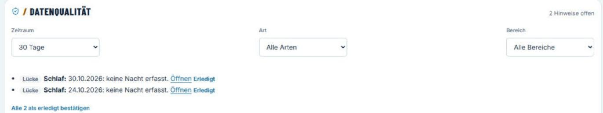

Neuigkeiten
Was in den letzten Versionen dazugekommen ist. Updates installierst du mit LIFESPAN-OS-Setup.exe – deine Daten bleiben erhalten. Neue Maschinen und den aktuellen Lebensmittel-Katalog bekommst du mit dem Komplettpaket (ZIP neu laden, Einrichten.cmd starten).
Version 1.0.254 (Handy-App 1.185.0) – Start mit einem Knopf, 16 Verbindungen, Tagesaussage, Brustgurt per BluetoothNeu
28.11.2026
- Training – ein Knopf zum Start: „Heute: … starten“ schlägt den nächsten Tag aus deinem Plan vor – nach Termin, sonst nach der Reihenfolge deiner letzten Einheiten. Haben deine Pläne nur je einen Trainingstag, wechseln sich die Tage ab: Dran ist, was am längsten her ist. Darunter steht, welche Muskeln des Tags noch nicht erholt sind; bei auffälliger HRV kommt „Leichter starten (−20 %)“ dazu. Alle anderen Wege (Tag aus Plan, freies Training, Nachtragen, Cardio) liegen aufgeräumt unter „Anderes Training, Cardio oder nachtragen“.
- Verbindungen – 16 neue Auswertungen (Insights und Sleep)
- Diät und Körper: Krafterhalt in der Diät, Gewichtssprung erklärt (Kohlenhydrate, Salz, späte Mahlzeit, Trinken, Training), Wochentags-Muster, Schritte in der Diät, Energieverfügbarkeit.
- Training: Plateau mit Ursache, Pausenlänge gegen nächsten Satz, Ermüdung über vier Marker, Cardio-Effizienz, Trainingszeit und Vorlauf, Dosis und Wirkung je Muskelgruppe (Muskelgruppen wie in der Körperkarte).
- Schlaf: Trinken nach 20 Uhr, letzte Mahlzeit und Trainingsende gegen Wachzeit und Einschlafdauer; Alkohol am Vorabend.
- Gesundheit: Blutdruck mit Salz, Kalium und Gewicht; Mikronährstoff-Lücken mit Lebensmitteln, die du ohnehin isst.
- Jede Verbindung zeigt die Beobachtung, die verwendeten Werte, den Rechenweg hinter dem ⓘ und die Fundstelle in Ask iCoach.me. Bewertung und Empfehlung gibt es nur mit Einwilligung.
- Nutrition – „Was passt noch?“: In der Tagessumme stehen Vorschläge aus deinen häufigen Zusammenstellungen und Lebensmitteln, passend zum Rest des Tages – ein Klick trägt ein.
- Eine Tagesaussage: Overview, Recovery und Insights zeigen dieselbe Aussage zum Tag – der Erholungswert als Grundlage, gebremst durch HRV-Regel, Belastung oder Griffkraft, dazu die Dauerthemen der letzten 14 Tage. Die Karte „Bereitschaft“ entfällt.
- Brustgurt per Bluetooth (erste Fassung): Ruhepuls und HRV (RMSSD) direkt vom Pulsgurt, z. B. Polar H9/H10, Garmin HRM oder Wahoo Tickr – ohne Hersteller-Cloud: 1 Minute Einpendeln, 2 Minuten Messung. Zu finden im Morgen-Check-in (Overview) und unter Recovery → ANS-Werte erfassen. Gestörte Herzschläge werden erkannt und nicht gewertet; die App zeigt, wie sauber die Messung war. Eine Uhr ist keine Voraussetzung mehr: Leere Seiten nennen alle Wege (Abgleich, Geräte-Import, Brustgurt, Handeingabe).
- Handy-App:
- „Training“ öffnet immer die Einheiten mit dem Startknopf. Die Startseite erklärt den aktuellen Weg der Exportdatei.
- Verbindungen, „Was passt noch?“ und Tagesaussage wie am PC.
- Brustgurt-Messung über Bluetooth in Chrome auf Android. Safari auf dem iPhone bietet Web-Apps kein Bluetooth an – dort am PC messen oder die Werte von Hand eintragen.
Version 1.0.253 (Handy-App 1.184.0) – Recovery-Cockpit, Sleep als Grafik, Masterclass Schlaf
27.11.2026 · enthält alle Neuerungen aus 1.0.233 bis 1.0.253 (Handy-App 1.169.0 bis 1.184.0)
- Recovery – das neue Cockpit
- Erholungswert von 0 bis 100 aus HRV, Ruhepuls, Schlaf und Selbsteinschätzung – jeweils gegen deinen eigenen Normalbereich der letzten 28 Tage, mit Verlauf über 14 Tage und Wochenübersicht.
- Muskelerholung je Muskelgruppe (wie die Körperkarte), „Nächste Einheit“ aus deinem Trainingsplan und Griffkraft als Ermüdungsmarker.
- „Was deine Erholung bewegt“: deine Nacht-HRV mit und ohne Schlaf ab 7,5 h, späte Mahlzeit, Koffein nach 14 Uhr, Training am Vortag und Stress. Dazu eine Prognose für die nächste Nacht und die Blutwerte zur Erholung.
- Karten frei anordnen und in der Breite einstellen wie bei Sleep. Die ANS-Karte zeigt alle Verläufe nebeneinander.
- Sleep – acht neue Grafiken: Schlafverlauf je Nacht, Nightly Recharge, Anteile der Phasen, Schlafphasen und Schlaffenster je Nacht, Schlafdauer gegen HRV, Koffein und Schlafdauer, niedrigste Herzfrequenz und HRV. Jede Karte erklärt hinter dem ⓘ, was sie zeigt, was sie aussagt und was du anpassen kannst. „Eine Nacht im Detail“ ist jetzt eine eigene Karte, SleepWise eine Grafik, und die Karten verteilen sich automatisch auf den Platz.
- Bessere Daten
- Messbedingungen (z. B. nüchtern, nach dem Aufstehen), persönlicher Normalbereich und Normtabelle.
- Zeitpunkt je abgehaktem Satz als Grundlage für Pausen und Dichte, „Wie anstrengend?“ beim Cardio, kcal brutto und netto laut Gerät.
- Aktivitäten aus FIT- und TCX-Dateien importieren (Import/Export → Aktivitäten).
- Polar: Ruhepuls aus Nightly Recharge, Schlafeffizienz und Schlafqualität aus der Polar-Bewertung.
- Wertebereiche bei allen Eingaben: RPE 1–10, Gewicht 0,25–600 kg, Leistung 1–2.700 W (mit Hinweis über 250 W), Frequenz 1–300, Stufe 1–100, Puls 1–220, kcal bis 20.000. Body & Longevity prüft jede Messgröße gegen einen Bereich, der jeden Menschen abdeckt.
- Auswertung: Insights → Training mit Erholung am Folgetag und Regelkatalog, Koffein nach 14 Uhr, Wochenbericht „Ernährung im Detail“, Blutwerte und Zufuhr im Verlauf (Health).
- iCoach.me: neu ist „Die Masterclass Schlaf“ (179 Seiten) mit 673 Fragen im Ask.
- Oberfläche: Alle Bereiche haben ein Symbol. Beim Verschieben zeigt eine größere Miniatur, welche Karte du bewegst. Die Tagebuch-Liste steht nach Uhrzeit, „Mahlzeit bearbeiten“ öffnet oben. Die 3D-Muskelkarte hat eine geschlossene Körperhülle und zoomt nur mit Strg + Mausrad.
- Handy-App:
- Mahlzeit erfassen: Das Suchfeld steht oben, „Wie immer“, „Oft gegessen“ und „Wie gestern“ lassen sich wieder abwählen, die Seite springt nicht mehr.
- Sleep-Grafiken, Masterclass Schlaf, Aktivitäten-Import und die neuen Datenfelder wie am PC.
Version 1.0.232 (Handy-App 1.168.0) – Makro-Details mit Aminosäuren, Omega-6 zu Omega-3, DRAX und Synergy
26.11.2026 · enthält alle Neuerungen aus 1.0.227 bis 1.0.232 (Handy-App 1.162.0 bis 1.168.0)
- Ernährung – woher kommen Fett, Protein und Kohlenhydrate?
- Tagessumme → „Details“: für Fett, Protein und Kohlenhydrate die Aufteilung, die Menge je Mahlzeit, die Lebensmittel mit dem größten Anteil und der Verlauf der letzten 14 Tage. Die Referenzwerte der DGE stehen zur Einordnung dabei – bewertet wird nichts.
- Aminosäuren: Lebensmittel haben jetzt ein Aminosäurenprofil (9 essenzielle, 9 nicht essenzielle). Beim Protein siehst du beide Gruppen getrennt, zum Auf- und Zuklappen. BLS-Lebensmittel bringen die Werte mit, 1.111 Lebensmittel und 113 Supplements in 14 Hersteller-Paketen ebenfalls.
- Omega-6 zu Omega-3: eine Skala zeigt das heutige Verhältnis und die Referenz der DGE (höchstens 5 : 1).
- Neue Angaben je Lebensmittel: einfach und mehrfach ungesättigte Fettsäuren, Trans-Fettsäuren, Stärke und Wasser – bei BLS-Lebensmitteln automatisch.
- Wasser aus Lebensmitteln erscheint im Wasserhaushalt getrennt von den Getränken; per Schalter zählt es zum Trinkziel.
- Omega-3 aus Supplements zählt beim Fett mit, wenn am Supplement kein Fett eingetragen ist.
- Mehr Platz: „Weitere Nährwerte“ und die Details im Wasserhaushalt klappen auf Wunsch auf; Lebensmittel „ohne Angabe“ stehen zugeklappt darunter.
- Hersteller-Paket erneut installieren ergänzt fehlende Werte (z. B. Aminosäuren) – deine eigenen Angaben bleiben.
- Maschinendatenbank – jetzt 2.799 Maschinen: neu sind DRAX (VECTOR, TWMA, PUREPLATE, TWF, NR Series, Cardio) und Synergy Fitness (Infinity, Dual, Air) mit Bildern, übersetzter Beschreibung und technischen Daten. Neue Maschinen kommen mit dem Komplettpaket (ZIP neu laden, Einrichten.cmd starten).
- Training: In der 3D-Ansicht der Muskelkarte ist die Brust klar von Sägemuskel und Bauch getrennt.
- Recovery: Auch die Karte „Einschätzungen“ trägt den orangen Punkt, solange du heute noch nicht eingeschätzt hast.
- Hilfe: Die Fragen und Antworten (Settings → FAQ und Suche) sind überarbeitet und um sieben Fragen erweitert.
- Dunkelmodus: Die Hinweise zu Pre- und Post-Workout im Tagesverlauf und andere orange Hinweisflächen sind wieder gut lesbar.
- Handy-App:
- Alle Neuerungen der Ernährung wie am PC.
- Neue Konten starten mit allen 2.799 Maschinen.
- Maschinenbilder: Neue Maschinen kommen als kleiner Nachtrag dazu (Import/Export → Maschinenbilder → „Alle laden“, gut 2 MB) – das große Bilderpaket muss nicht neu geladen werden.
Version 1.0.226 (Handy-App 1.161.0) – Bereiche verschieben, To-do-Listen, 200 neue Maschinen
25.–26.11.2026 · enthält alle Neuerungen aus 1.0.213 bis 1.0.226 (Handy-App 1.143.0 bis 1.161.0)
- Bereiche verschieben – wie beim iPhone: Eine Karte 3 Sekunden gedrückt halten. Alle Karten klappen zu und wackeln leicht, dann ziehst du sie in die neue Reihenfolge; am Rand läuft die Seite mit. Das Auge blendet eine Karte aus oder wieder ein, „Standard“ stellt die ursprüngliche Reihenfolge her, „Fertig“ speichert. Gilt auf jeder Seite und in jedem Reiter, am PC und am Handy, und ersetzt die bisherigen Knöpfe „… anpassen“.
- Checklisten:
- Neben „To-dos am …“ bis zu drei eigene Listen (z. B. Einkauf), umbenennen, löschen, neu anlegen.
- Offene To-dos der letzten sieben Tage wandern von selbst auf heute; erledigte rutschen nach unten.
- Orange Punkte bis aufs Feld: Der Punkt zeigt auf jeder Ebene, wo heute noch etwas fehlt – Seite, Reiter, Bereich und das einzelne Feld (z. B. Gewicht, VO2max, Griffkraft). Er verschwindet, sobald der Wert eingetragen ist.
- Training:
- Gym → Maschine hinzufügen: Filter nach Hersteller und Muskelgruppe, alle Treffer mit Bild, Mehrfachauswahl („N Maschinen hinzufügen“); schon trainierte Maschinen stehen vorn.
- Muskelgruppen als Rubriken zusammengefasst (z. B. Brust mit oberer und unterer Brust, Schultern mit vorderer, seitlicher und hinterer).
- „Als Plan anlegen“: eine Einheit mit einem Klick als Trainingsplan speichern.
- Mehr Geräteeinstellungen je Übung: Fußstütze Winkel, Drehachse 1 und 2, Anzahl und Farbe der Resistance-Bänder (Farben kombinierbar, z. B. „Rot + Blau“).
- Maschinendatenbank – jetzt 2.651 Maschinen, jede mit Serie:
- Neu: Nautilus Early Series, 1st Gen, Next Gen, Nitro, 2ST und XPload, MedX Strength, Rogers Pendulum sowie einzelne Hammer-Strength-Geräte – mit Bildern, Maßen und Muskelgruppen.
- Hammer Strength ist ein eigener Hersteller (Serien Plate Loaded, Select, MTS, HD und mehr), nicht mehr unter Life Fitness.
- Neue Maschinen kommen mit dem Komplettpaket (ZIP neu laden, Einrichten.cmd starten).
- Body & Longevity: Griffkraft – vor der Messung zeigt LIFESPAN, wann eine Messung am sinnvollsten ist, damit die Werte vergleichbar bleiben (gleiche Tageszeit, ausgeruht).
- Ernährung:
- Mahlzeit erfassen kompakter: „Wie immer?“ rückt nach oben, die Suche über alle Datenbanken hat einen orangen Rahmen.
- Mahlzeiten und Koffein sind im Tagebuch beim Öffnen zugeklappt.
- Neues Lebensmittel-Paket „Sweets“ (Hitschies, Ritter Sport, HARIBO, MAOAM, Lindt, Milka, Manner, Läderach).
- iCoach.me: Neues Magazin „Die Kartoffel. Kohlenhydrat mit Upgrade.“
- Handy-App:
- Startet deutlich schneller (alle Bausteine in einer Datei, sofort aus dem Speicher).
- Nutrition wie am PC: Vorlagen & Rezepte und Datenbanken (Lebensmittel, BLS, Open Food Facts, Supplemente), Stacks bearbeiten.
- Griffkraft und Trainingszonen erfassen wie am PC; Grafiken im Querformat groß und zoombar.
- Neue Konten am Handy starten mit allen 2.651 Maschinen.
Version 1.0.212 (Handy-App 1.142.0) – Maschinen per Nummer finden, mehr Einstellungen am Handy, Dunkelmodus
25.11.2026
- Training → Meine Gyms → Maschine hinzufügen:
- Die Suche findet jetzt jede Maschine der Datenbank, auch über die Studionummer, die dasGym-Nummer oder die Artikelnummer. Eine genau passende Nummer steht ganz oben.
- Maschinen, die schon im Gym stehen, bleiben in der Liste und sind mit „steht schon im Gym (Nr. …)“ markiert.
- Das Referenz-Studio kommt jetzt immer vollständig in der Handy-Datei mit.
- Handy-App wie am PC:
- Settings → Tagesziele: „Verbrauch und Carb-Cycling“ einstellen.
- Superhuman → HRT: die Abstände der nächsten Laborkontrolle ändern.
- Insights: Zielvorschläge aus deinen Hauptzielen übernehmen und den echten Verbrauch als Kalorienziel setzen.
- Schnellerfassung: „Eingabe für alles“ – eine Zeile wie „82,4 kg“, „2 Glas Wasser“, „Espresso“ oder der Name eines Stacks genügt.
- Tagesverlauf: Beim Bearbeiten eines geplanten Trainings merkt sich das Handy „Nur an diesem Tag / Jeden …“ und „mitverschieben“.
- Dunkelmodus: Häkchen, erledigte To-dos, der gewählte Tag der To-do-Woche, die untere Leiste und die Longevity-Kacheln sind im hellen und dunklen Modus wieder gut lesbar.
- Schneller: Zahlen werden beim Start der App schneller formatiert.
- Website: Neuer Abschnitt „Geteilte Gyms“ – reiche dein Gym ein, damit andere es übernehmen können.
Version 1.0.210 (Handy-App 1.139.0) – Mahlzeit erfassen neu, Tagesverlauf zum Ziehen, Overview „Reduziert“, Gyms teilen
23.–24.11.2026
Enthält alle Neuerungen aus 1.0.190 bis 1.0.210 (Handy-App 1.114.0 bis 1.139.0). Alles davon ist im aktuellen Download enthalten.
- Nutrition → Mahlzeit erfassen: eine Karte statt „Schnell eintragen“ und „Lebensmittel suchen“.
- Oben Mahlzeit und Uhrzeit, darunter „Wie immer?“ mit deinen typischen Zusammenstellungen für diese Mahlzeit.
- Eine Suche über alle Datenbanken – eigene Lebensmittel, BLS, Open Food Facts, Gerichte, Supplemente, Stacks und Koffein – oder der Schnelleintrag nur mit Nährwerten.
- Aus den Zutaten lässt sich direkt ein Gericht anlegen, auch mit Supplementen. Die Favoriten passen sich der gewählten Mahlzeit an.
- Nutrition → Tagesverlauf (beta):
- Mahlzeiten, Supplemente, Wasser und Koffein gedrückt halten und an eine andere Uhrzeit ziehen; eine gestrichelte orange Linie zeigt die Zeit auf der Achse.
- Am Uhrzeit-Griff drei Symbole: Lebensmittel, Supplement oder Koffein zu genau dieser Uhrzeit eintragen. „Jetzt eintragen“ springt zur aktuellen Uhrzeit.
- Pre- und Post-Workout-Hinweise lassen sich einzeln wegklicken.
- Nutrition → Tagebuch:
- Protein, Kohlenhydrate und Fett zweistufig: Ein Strich im Balken zeigt das Minimum, das Ende des Balkens das Tagesziel inklusive Training und Alltagsbewegung.
- Neue Karte „Ballaststoffe, Zucker, Salz“: woher der Stoff an diesem Tag kommt und der Verlauf der letzten 14 Tage.
- Mikronährstoffe aus dem BLS: Lebensmittel aus dem Bundeslebensmittelschlüssel liefern alle ihre Stoffe. Unter 70 % des DGE-Referenzwerts gibt es einen Hinweis.
- Koffein aus Lebensmitteln: neues Feld „Koffein“ mit Richtwerten für Kaffee, Tee, Cola und Energy-Drinks. Es zählt im Tagesverlauf und in den Schlaf-Auswertungen mit.
- Carb-Cycling (optional, unter Settings → Ziele): an Trainingstagen mehr, an Ruhetagen weniger Kohlenhydrate.
- Overview „Reduziert“ (am Handy voreingestellt):
- Oben steht der Block „Heute“ mit Erholung, Kalorien, Protein, Training, offenen Punkten, Wasser und Schritten.
- Darunter der „Tagesablauf“: Jeder Punkt führt direkt zum Eintragen, welche Punkte erscheinen, stellst du ein.
- „Datenqualität“ zeigt, welche Daten den Auswertungen noch fehlen. Alle anderen Karten stehen als zugeklappte Zeilen darunter.
- Training:
- Das passende Gym ist beim Start vorgewählt.
- Gewicht und Wiederholungen werden nach der doppelten Progression vorgeschlagen.
- Ein freies Training, das zu einem Trainingstag passt, bekommt dessen Namen vorgeschlagen.
- „Maschinen je Muskel“ zeigt die beste Maschine deines Gyms für jeden Muskel.
- Training → Datenbank → Meine Gyms → „Gyms teilen“: eigene Gyms mit Maschinen, Fotos und Muskelfokus als Datei weitergeben – ohne Mitgliedsnummer und Zutrittscode.
- Beim Einlesen gleicht LIFESPAN OS fremde Maschinen mit deiner Datenbank ab (Artikelnummer, Hersteller, Name mit Übersetzungen und Tippfehlern) und zeigt die Ähnlichkeit in Prozent.
- Du entscheidest je Maschine: zusammenführen, als neue Maschine übernehmen oder weglassen.
- Insights: Start mit der letzten vollständigen Woche, neue Auswertungen „Spätes Training und Schlaf“ und „Echter Verbrauch“ aus dem Gewichtsverlauf; der Plan aus dem Weekly Report lässt sich als To-dos übernehmen.
- Body: Hume-Screenshots werden zuverlässiger gelesen; Griffkraft mit Uhrzeit und deiner üblichen Messzeit.
- Superhuman → HRT: „Nächste Laborkontrolle“ mit den fälligen Werten; die nächste Gabe steht als Punkt in den Checklisten.
- Settings: Suche oben, zuklappbare Gruppen, und alles speichert sofort – mit „Rückgängig“. In der Handy-App gilt das jetzt für fast alle Formulare.
- iCoach.me → Magazin: zwei neue Ausgaben – „Straight-Sätze“ und „Griffkraft“.
- Maschinen: Nautilus Torso Arm Pull Down (dasGym Wien Nr. 989) mit Muskelfokus „Überzug“.
Version 1.0.189 (Handy-App 1.113.0) – Trainings im Tagesverlauf, Pläne als Kalender, orange Punkte, Erinnerung an die Hormongabe
23.11.2026
Enthält alle Neuerungen aus 1.0.180 bis 1.0.189 (Handy-App 1.106.0 bis 1.113.0):
- Nutrition → Tagesverlauf (beta): Trainings erscheinen als Balken über alle Spalten – erfasste Einheiten von Start bis Ende, geplante Einheiten aus den Trainingsplänen.
- Hinweise bei Krafttraining und intensivem Cardio: Pre-Workout (30–90 Minuten vorher bzw. eine Mahlzeit 1–3 Stunden vorher) und Post-Workout (Kohlenhydrate und Protein nach dem Training). „Pre-/Post-Workout eintragen“ setzt den Knopf gleich auf die passende Uhrzeit; mit „✕“ blendest du die Hinweise für ein Training aus.
- Doppelklick bzw. zweimal tippen auf eine geplante Einheit: verschieben, Dauer ändern oder löschen – nur an diesem Tag oder jeden Wochentag. Workout-Mahlzeiten ziehen mit.
- Beim Eintragen oder Planen zeigt die Auswahl der Mahlzeit, was schon belegt ist: grüner Punkt = frei, roter Punkt = schon Lebensmittel eingetragen.
- Settings → Mahlzeiten: Pre-, Intra- und Post-Workout stehen immer zur Wahl; ein Häkchen entscheidet, ob eine Mahlzeit jeden Tag im Tagebuch steht. Neu sind die Workout-Richtwerte – Post-Workout in festen Gramm oder pro kg Körpergewicht, dazu die Zeitfenster.
- Nutrition → Tagebuch → Liste (PC): Uhrzeit, Kalorien, Protein, Kohlenhydrate und Fett in eigenen Spalten; Supplements mit Kalorien und Makronährstoffen werden mitgezählt.
- Training → Pläne als Kalender: Umschalter „Liste | Kalender“ mit allen Terminen im Monat. Termine verschieben, Uhrzeit und Dauer ändern, löschen oder direkt starten; „+“ plant ein neues Training. Jede Rubrik hat ihre Farbe – Krafttraining, Cardio, Sportart, Mobilität –, Restdays sind grün markiert, Krankheitstage rot. Erfasste Einheiten öffnen sich per Klick bzw. Tipp.
- Orange Punkte: Ein oranger Punkt im Menü zeigt, wo heute noch etwas offen ist – Körperwerte, Schlaf, Ernährung, geplantes Training, To-dos oder eine fällige Hormongabe. Ein Klick führt direkt zur Stelle zum Eintragen; der passende Reiter trägt ebenfalls einen Punkt.
- Superhuman → HRT: neues Feld „Injektionsintervall (in Tagen)“ je Präparat. Ist die nächste Gabe fällig, erscheint der orange Punkt bei Superhuman; nach 6 Stunden ohne Eintrag leuchtet der Bereich komplett orange, nach 12 Stunden kommt beim Öffnen eine Warnung, die du bestätigen musst.
- Werte nachtragen → Upload: Die Waagen-Auswertung (Foto oder PDF) übernimmt jetzt alle erkannten Werte – die heute fälligen in ihre Felder, alle weiteren zum Auswählen darunter.
- Maschinen: neue Kategorie „Basics“ mit 50 Geräten (gym80 Bänke & Basics, Eleiko Racks und Bänke); Studio-Paket dasGym Wien aktualisiert (194 Geräte).
- Handy-App bis 1.113.0: alles oben auch am Handy (außer den Spalten der Tagebuch-Liste).
Version 1.0.179 (Handy-App 1.105.0) – Schlafzeit im Tagesverlauf, Weekly Report im laufenden Betrieb
23.11.2026
- Nutrition → Tagesverlauf (beta): Die Schlafzeit aus dem Schlafprotokoll – die Nacht bis zum Morgen und die Nacht ab dem Abend – wird zu einer schmalen Zeile „Schlaf …“ zusammengeklappt, solange dort nichts eingetragen ist. „Einblenden“ zeigt sie für den Tag.
- Settings → Darstellung und Tageswechsel: „Tagesverlauf der Mahlzeiten“ – „Optimiert anhand der Schlafdaten“ (Voreinstellung) oder „Alles anzeigen“; gilt auch in der Handy-App.
- Insights → Weekly Report: Der Bericht der Vorwoche entsteht jetzt auch, wenn die App über Nacht offen bleibt, und kommt gleich mit der nächsten Datei aufs Handy.
Version 1.0.178 (Handy-App 1.104.0) – Tagesverlauf, Longevity, FAQ
23.11.2026
Enthält alle Neuerungen aus 1.0.160 bis 1.0.177 (Handy-App 1.70.1 bis 1.103.0):
- Nutrition → Tagebuch → Tagesverlauf: Mahlzeiten auf einer Zeitachse vom Tageswechsel (Settings) bis eine Minute davor, in festen Spalten: Mahlzeiten, Supplements, Wasser und Koffein. Rechts nur Symbole (Koffein mit mg), nahe Einträge als ein Symbol mit Anzahl. Umschalten zwischen „Tagesverlauf“ und „Liste“.
- Der Knopf steht auf der aktuellen Uhrzeit und lässt sich minutengenau ziehen: davor = gegessen eintragen, danach = planen. Geplante Mahlzeiten erscheinen hellgrau in Tagessumme und Makro-Balken und zählen erst mit „Gegessen“.
- Rechtsklick (Handy: Wischen bzw. Symbol antippen) auf jeden Eintrag: bearbeiten oder löschen – auch einzelne Gläser Wasser.
- Zoom mit STRG + Mausrad bzw. zwei Fingern; beim Ziehen scrollt die Seite mit.
- Koffein als eigene Zeile unter den Mahlzeiten; neue Mahlzeiten bekommen die aktuelle Uhrzeit, Stacks die Uhrzeit der Mahlzeit.
- Training: Einheiten als Liste oder Kalender, Muskel-Körperkarte in jeder Einheit, Cardio zählt in der Körperkarte (Satz-Äquivalente). Maschine im Training: Übungen an der Maschine ansehen und neu anlegen, Muskelfokusgruppe nach Schlagwort (z. B. „Wadenheben stehend“). Griffkraft in der Tagesbereitschaft.
- Meine Gyms: Zutrittskarte mit Vorder- und Rückseite, Bildausschnitt, Knopf „Zutrittscode“ im Training; Maschinenliste mit Bild-Großansicht, Schlagworte für Maschinen, Studio-Paket „Grünblick Private Gym“.
- Body & Longevity: Longevity-Überblick mit Normwerten (VO2max, Griffkraft, Ruhepuls, HRV, Körperfett, Laborwerte); Protocols mit 9 Büchern – gemeinsamer Nenner und Widersprüche.
- Health und Superhuman: Blutwerte und Hormongabe (Wirkstoffspiegel) mit Verweis in die Masterclass; HRT-Formular und Wirkstoffrechner neu geordnet.
- iCoach.me: neue Bücher Masterclass Longevity (579 Seiten, 835 Fragen) und Masterclass Blutwerte+ (145 Seiten, 602 Fragen) – zusammen über 3.000 Antworten in Ask iCoach.me.
- Settings → FAQ: über 90 Fragen zur App mit Suche, die auch gleichbedeutende Wörter versteht (Gym = Studio, Fitnessstudio …); die Suche oben zeigt passende Antworten direkt.
- Insights → Wochenbericht: das PDF enthält das Ernährungstagebuch der Woche (Montag bis Sonntag).
- Oberfläche: Reitergruppen, einheitliche Seitenleisten, Sleep neu angeordnet, Kleingedrucktes hinter ⓘ; Muskel-Körperkarte mit Schulter als Sichel.
- Handy-App bis 1.104.0: alles oben auch am Handy, dazu Datensicherung mit Wiederherstellung, Maschinen ohne PC, Ziele bearbeiten, PDFs am Handy und Uhr-Trainings übernehmen.
Version 1.0.159 (Handy-App 1.70.0) – Meine Gyms, Muskelfokus mit Hauptmuskel = 100 %
20.11.2026
- Training → Meine Gyms: mehrere Studios mit Anschrift, Kontakt, Mitgliedsnummer, Website und Foto; je Studio eine Maschinenliste mit eigener Nummer. Studio-Pakete installieren oder das eigene Studio als Paket exportieren.
- Muskelfokus: der Hauptmuskel einer Übung zählt als voller Satz, alle anderen anteilig.
- Training und Maschinen: intelligente Suche (Übersetzungen, Schreibweisen, Tippfehler) mit Miniaturbild, Pläne mit Symbol, sortierbare Einheiten, Jahresübersicht, eigenes Foto je Maschine.
- Overview: Kachel „Koffein“ mit Verlauf über den Tag; Settings → Profil: Profilbild.
- Handy-App 1.59.0 bis 1.70.0: Meine Gyms mit Studio-Paketen, Maschinenbilder als Gesamtpaket, Tag wechseln per Wischen.
Version 1.0.158 (Handy-App 1.58.0) – Open Food Facts, Strichcode im Lebensmittel-Formular
19.11.2026
Enthält auch die Neuerungen aus 1.0.156 und 1.0.157:
- Open Food Facts: rund 240.000 Markenprodukte aus Deutschland und Österreich, lokal auf dem PC – keine Verbindung ins Internet. Übernommen werden nur geprüfte Produkte (Pflichtwerte vorhanden, kcal höchstens 15 % neben der Rechnung aus den Makros).
- Nutrition → Open Food Facts: suchen nach Name, Marke oder Strichcode, „Übernehmen …“ öffnet das Formular – alles lässt sich vor dem Speichern bearbeiten.
- „Lebensmittel hinzufügen“ durchsucht jetzt eigene Lebensmittel, BLS 4.0 und Open Food Facts zusammen.
- Der Katalog ist im Download-Paket enthalten; „Einrichten.cmd“ kopiert ihn mit.
- Nutrition → Lebensmitteldatenbank → Neues Lebensmittel: Feld für den Strichcode und Nährwerte vom Foto der Packung erkennen (wie am Handy); bekannte Strichcodes werden in Open Food Facts nachgesehen.
- Mahlzeit erfassen: „Lebensmittel hinzufügen“ steht über dem Freitext; die Mengen-Knöpfe (50/100/150/200, ±10) sind wieder entfernt.
- Maschinenbilder: Dateien mit falscher Endung in echte JPG/PNG umgewandelt.
- Handy-App 1.58.0: Open Food Facts als optionaler Download (Import/Export → Open Food Facts), Treffer bei der Suche und beim Strichcode-Scan; Suche steht über dem Freitext.
Daten: Open Food Facts (world.openfoodfacts.org), Open Database License (ODbL).
Version 1.0.155 (Handy-App 1.56.0)
19.11.2026
- Abgleich auch während die App läuft: Polar höchstens einmal je Stunde, neue Handy-Datei alle 2 Stunden bzw. 30 Minuten nach einer Änderung, Rückgabedateien vom Handy alle 10 Minuten.
- Settings → Polar: Schalter „Automatisch synchronisieren“ (beim Start und im laufenden Betrieb).
- Handy: Griffkraft im Quick Fill (links und rechts, Rhythmus aus Settings → Quick Fill).
- Handy: „Importieren“ direkt in der Overview – ein Tipp öffnet die Dateiauswahl; ältere Dateien werden erkannt.
Version 1.0.154 – Mahlzeiten schneller eintragen
18.11.2026
- Tagebuch: „Wie gestern“ und „Wie letzten <Wochentag>“ sowie oft gegessene Zusammenstellungen mit einem Klick eintragen – danach „Rückgängig“.
- Geplante Gerichte aus Nutrition → Planen mit „Gegessen“ ins Tagebuch übernehmen.
- Mahlzeit erfassen: Freitext („200 g Hähnchen, 150 g Reis, 1 EL Olivenöl“), Favoriten mit üblicher Menge und Mengen-Knöpfe (50/100/150/200 g, ±10, ½/1/2 Portionen).
- Handy-App 1.55.0: dieselben Funktionen, Mehrfachauswahl in der Suche und Fasttracking direkt am Handy.
Version 1.0.153 – Griffkraft im Quick Fill
18.11.2026
- Quick Fill fragt auf Wunsch die Griffkraft ab (links und rechts, nach Rhythmus: täglich bis monatlich). Einstellen unter Settings → Quick Fill.
- Import/Export: kürzere Einleitung, mehr Platz für die Inhalte.
Version 1.0.152
18.11.2026
- Handy-App 1.54.0: Quick Fill zum Nachtragen fehlender Werte und des Schlafs, Empfehlungen zu deinen Hauptzielen, Ziele, Datenqualität mit „Erledigt“, Health → Termine und Nutrition → Planen.
- Training: „HYROX-Wettkampf-Angaben“ erscheinen nur noch bei HYROX-Einheiten.
- Insights → mögliche Zusammenhänge: Eiweiß und Muskelkater am Folgetag entfällt; Empfehlungen ohne Aufzählungspunkte.

Version 1.0.151
18.11.2026
- Quick Fill mit Schlaf: fehlt die letzte Nacht, fragt die App Zubettgehen und Aufstehen ab, sonst leere Angaben wie die Schlafqualität.
- Insights → Datenqualität: Hinweise lassen sich als erledigt bestätigen und verschwinden danach.
- Settings und Import/Export: Die Sprungleiste zeigt beim Scrollen, wo du gerade bist.
- Handy-App 1.53.0: kleinerer Kopf in der Overview mit Schritten zum Schrittziel.

Version 1.0.150
18.11.2026
- Austausch-Ordner wird wiedergefunden, wenn Google Drive für Windows „Meine Ablage“ an einen anderen Ort verlegt – mit „Diesen Ordner verwenden“.
Version 1.0.149
18.11.2026
- Quick Fill: Werte, die kein Import liefert (z. B. intrazelluläres Wasser), sammelt die App – „Werte nachtragen“ oben fragt sie gesammelt ab.
- Hauptziele in Settings, z. B. Fettabbau, Muskelaufbau oder besserer Schlaf.
- Insights → Empfehlungen zu deinen Hauptzielen: aus „iCoach.Me – Die Masterclass“ zu deinen Werten der letzten 14 Tage, jeweils mit Buchstelle – nur mit deiner Einwilligung.

Version 1.0.148
18.11.2026
- Oberfläche aufgeräumt: schmaler Kopfbereich beim Scrollen, breitere Ansicht auf großen Bildschirmen, ruhigere Diagramme.
- Training → Auswertung übersichtlicher; Sprungleiste in Settings und Import/Export.
- Handy-App 1.52.0: Tabellen repariert, Overview-Karten zuklappbar, Schrift ohne Google Fonts.
Version 1.0.147
18.11.2026
- Nutrition → Planen: Wochenplan aus deinen Vorlagen und Rezepten mit Nährwerten je Tag und Einkaufsliste mit Mengen (in die Zwischenablage oder als To-dos).
- Insights → Monats- und Jahresrückblick: Kennzahlen mit Vergleich zum Vormonat bzw. Vorjahr, Aufteilung nach Wochen bzw. Monaten und neue Rekorde – als PDF.
- Geräte-Import: Oura und WHOOP über deren Exportdateien (Schlaf mit Phasen, HRV, Ruhepuls, bei Oura auch Schritte).
Version 1.0.146
18.11.2026
- Training → Fortschritt: „Neue Rekorde“ erkennt jede verbesserte Bestleistung und das geschätzte 1RM (Epley); Bestenliste mit 1RM und Sortierung.
- Insights → Ziele: z. B. Kniebeuge 140 kg oder Körperfett unter 15 % – mit Fortschrittsbalken, Meilensteinen, Verlauf und nötigem Tempo bis zum Zieldatum.
- Health → Termine: Blutabnahme, Arzt- und Labortermine mit Erinnerung – in der Terminübersicht, der Kalender-Datei, im Weekly Report und als Hinweis in der Overview.
- Globale Suche: Strg+K oder „Suchen“ in der Kopfleiste – Übungen, Lebensmittel, Laborwerte, Einheiten, Notizen, Ziele, Termine und Tage.
Version 1.0.145
17.11.2026
- Insights → Datenqualität: findet Lücken, Ausreißer (z. B. 8 kg Gewichtssprung an einem Tag) und Doppelte über alle Bereiche, mit „Öffnen“ zum Korrigieren.
- Sleep → Schlaf-Regelmäßigkeit: Streuung von Zubett-, Aufstehzeit und Schlafmitte, Verschiebung zur Vornacht und Wochenende gegenüber Werktagen.
- Sleep → „Koffein vor dem Schlafen“: hellbraune Fläche unter der Kurve.
Version 1.0.144
17.11.2026
- Schritte über den Tag von Polar werden wieder übernommen (Uhrzeiten ohne Sekunden).
Version 1.0.143
17.11.2026
- Import/Export → Freigabe-Paket für Trainer oder Ärztin: Tabellen, optional Arztbericht-PDF – weitergeben machst du selbst.
Version 1.0.142
17.11.2026
- Training → NEAT → Schritte über 24 Stunden.
- Kalender-Datei (.ics) für die nächsten 8 Wochen.
- Kurzanleitung fürs iPhone beim Austausch-Ordner.
Version 1.0.141
17.11.2026
- Austausch & Abgleich über einen Ordner in Google Drive; Import-Ordner für Uhr, Ring, Waage und Sensor.
- Polar: Synchronisieren beim Start (abschaltbar).
Version 1.0.140
17.11.2026
- Plan der Woche als To-dos, Datenprüfung mit „Öffnen“, Tag im Überblick, Superhuman-Zeitachse.
Version 1.0.139
17.11.2026
- Weekly Reports: jeden Montag der Wochenbericht der abgeschlossenen Woche – lesen oder als PDF.
Version 1.0.138
17.11.2026
- Schritte: der zuletzt erfasste Wert gilt; Handy-Settings bearbeitbar.
Version 1.0.137
17.11.2026
- Polar-Datenexport (ZIP) vollständig einlesen.
Version 1.0.136
16.11.2026
- Eigene Mahlzeiten, Seiten anpassen in Sleep, Recovery und Import/Export, Koffeinspiegel in der Nacht.
Version 1.0.135
16.11.2026
- Hersteller-Pakete zum Herunterladen statt fest eingebauter Herstellerprodukte.
Version 1.0.134
16.11.2026
- 113 neue Übungen, HYROX-Simulation und -Wettkampf.
Alle Daten bleiben auf deinem Computer. Ältere Versionen findest du auf GitHub unter „Releases“.